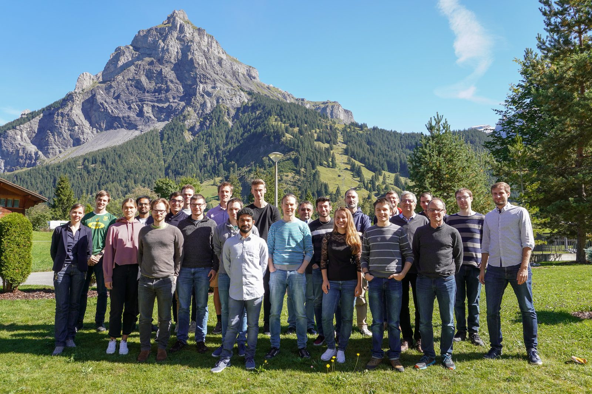

Vision
The Learning Collider
Physics-first AI, AI-first physics.
After more than a decade of running, the Large Hadron Collider has revealed no physics beyond the Standard Model. The case that such physics exists is as strong as it ever was. The open question is not whether the data have been searched hard enough, but whether they have been searched widely enough.
What limits the search
The constraint on discovery at the energy frontier is not the accelerator, and it is not the data. It is the time it takes people to build a search. Each one is assembled by hand, over months or years, which means only a small fraction of the signatures the data could reveal has ever been examined. The rest were not ruled out. There was simply nobody available to look.
Systematic coverage
A search that is built once and then reconfigured many times can cover in months what would otherwise take person-centuries of individual effort. This is an engineering problem, and engineering problems can be solved. The group is building that machinery: a single validated pipeline, one background model and one statistical treatment, applied again and again to spectra nobody has had the time to examine.
Keeping the statistics honest
Wider coverage is only useful if the statistics keep up with it. Ask a thousand questions of the same dataset and something will look significant by chance. Every hypothesis tested here is therefore charged against a fixed, explicitly budgeted discovery allowance: as the catalogue of searches grows, the threshold each one has to clear rises with it, so that a thousand searches produce no more false discoveries than a single one. This is part of the design rather than a caveat added at the end.
A map of what has been looked at
A systematic programme produces more than a limit or a bump. It produces a record of which possibilities have been tested, at what sensitivity, and which remain unexamined. If something is within reach, this is how it turns up. If it is not, the field still gains a quantified account of its own coverage, and keeps the machinery.
Where the AI fits, and where it does not
AI agents are used to write, test and harden the software, and they do it well. They do not make scientific decisions. Production runs deterministically, and every published number comes from a transparent classical calculation that a referee can follow line by line. The methods can be as modern as the problem requires; the inference stays conventional.
Why now
Run 3 is complete and the accelerator is in a long shutdown. The High-Luminosity LHC will deliver most of the data the LHC will ever produce, and the machinery that decides how those data get searched has to be built and validated on the data already in hand.
The methods behind this are described under Research →
Track record
Selected results
Community
Convening the field
Much of this work comes down to getting the right forty people into a room for a week, and making it worth their time. Tobias Golling started, steers or hosts five series — Hammers & Nails, EuCAIFCon, the Villa Boninchi weeks in Geneva, the AIPHY doctoral network and the Glühwein workshop. Every edition, with dates and links, is on the Output page.
Support
Funded research
Where the name comes from
RODEM stands for Robust Deep Density Models for High-Energy Particle Physics and Solar Flare Analysis, an SNSF Sinergia project that ran from 2020 to 2024 together with colleagues in computer science and astronomy. It funded the first generation of students and postdocs here, who went on to build CURTAINs, the ν-flows family and the first particle-cloud diffusion models. It is also the reason a particle physics group in Geneva began publishing at NeurIPS, and it established the practice of treating a method as a deliverable in its own right, released and documented, rather than as scaffolding for a single measurement.
The project ended in 2024, but the name stayed. The datasets are still the RODEM Jet Datasets, the code is still at github.com/rodem-hep, and the group is still called RODEM.
